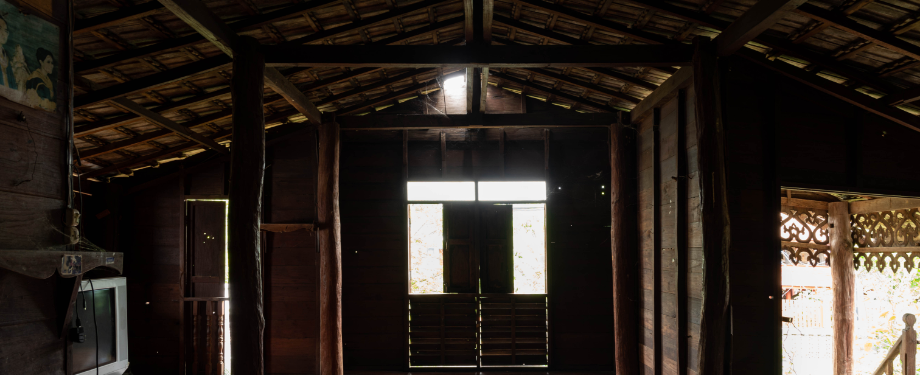
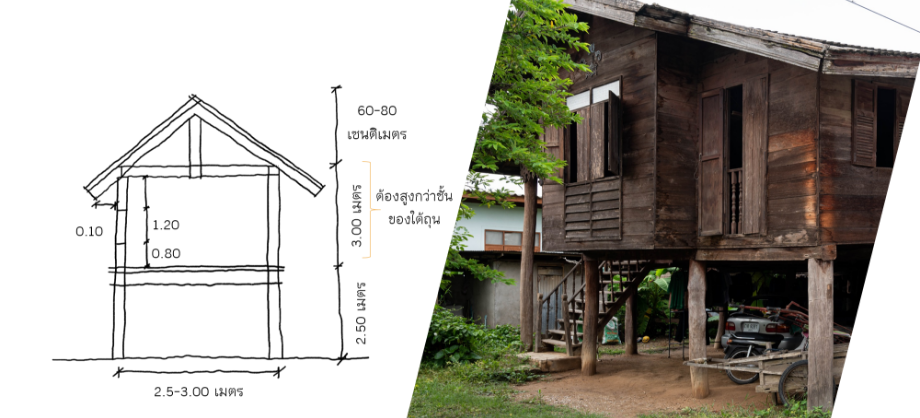
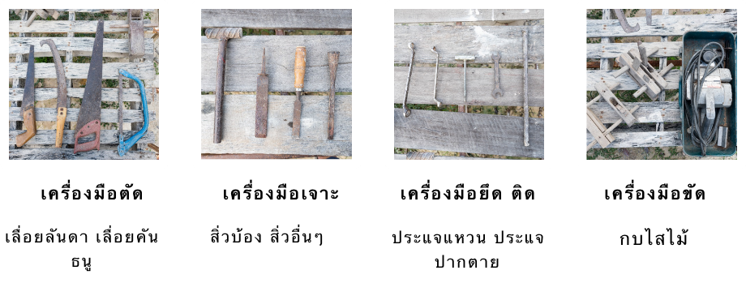

ขั้นตอนการสร้างเรือน
-
การออกแบบ - เขียนแบบ : คนเมือง (ล้านนา)
มีความเชื่อในการสร้างเรือนตามการวางโฉลกเสา
โดยจะมีจำนวนเสาเรือนที่ดีตามตำราไว้อยู่แล้ว
สล่าเก๊าที่จะสร้างเรือนจะมาดูที่ดิน และหมายไว้ว่าตรงไหนเป็นเสาอะไร
จะได้ขนาดเรือนตามที่ดินที่เจ้าของเรือนมีอยู่ โดยจำนวนเสารวมทั้งหมด
จะต้องตกอยู่ที่ตำแหน่งที่ดีเท่านั้น หากไม่ดีก็จะมีการเพิ่มลดจำนวนเสา
ซึ่งระยะห่างของเสาแต่ละต้นจะอยู่ที่ประมาณ ๒ – ๓ เมตร ยกพื้นใต้ถุน
๒.๕ – ๓ เมตร ความสูงของตัวเรือนประมาณ ๒ – ๒.๕ เมตร
ระยะวางประตูจากพื้นอยู่ที่ความสูง ๘๐ เซนติเมตร
ความสูงดั้งจากระยะคานประมาณ ๖๐ - ๘๐ เซนติเมตร ชายคายื่นอกมาประมาณ ๘๐
เซนติเมตร
-
เตรียมวัสดุในการสร้างเรือน โดยที่เจ้าของเรือนจะเป็นผู้เตรียม
สล่าเก๊าจะบอกว่าต้องเตรียมวัสดุเสา โครงสร้าง หลังคา องค์ประกอบอื่น ๆ
ขนาดและจำนวนเท่าไหร่ที่จะใช้สร้างเรือน โดยก่อนที่จะสร้างเรือน
จะมีการนำวัสดุ อุปกรณ์ ขึ้นขันโดยพระอาจารย์ในวัดประจำหมู่บ้าน
เพื่อเป็นสิริมงคลก่อนจะลงมือสร้างเรือน
-
ปักผัง ขุดหลุมฐานรากความลึก ๑ – ๑.๕ เมตร กว้างตามขนาดเสาที่จะปัก
โดยก้นหลุมปกไม้เสาลงไปจะมีทรายบ้าง ใส่หรือไม่ใส่ก็ได้
ปกเสาให้ได้ความสูงที่ต้องการและกลบดิน
- ใส่คาน : ใส่คานบน (อะแส), คานล่าง
- โครงสร้างหลังคา : จันทัน, กลอน, แป และมุงหลังคา
- โครงสร้างพื้น : คาน, ตง และปูไม้พื้น (ไม้กระดาน)
- โครงสร้างผนัง : โครงเคร่า, วงกบประตู – หน้าต่าง
- กรุผนัง (ไม้ฝา)
- ใส่บานประตู - หน้าต่าง
- ขึ้นบันไดเรือน


เครื่องมือสร้างเรือน
- ค้อน : ตอกตะปู งัดตะปู
- ขวาน : ฟัน ซ้อม แต่งไม้
- สิ่ว : เจาะ
- ขอขืด : ขีดเพื่อกำกับการแต่งไม้
- ลูกดิ่ง : ลุกวัดระดับฉากตั้ง
- สว่านมือ : เจาะ
- ประแจ : ขันน็อตเพื่อยึด
- ประแจดัดเหล็ก : ดัดให้เหล็กงอ
- เลื่อย : ตัดไม้ แต่งไม้ให้ตรง หรือ โค้ง
-
กบไสไม้ : ไสหน้าไม้ให้เรียบ, ทำบังใบ, แต่งร่องไม้, เซาะร่องใส่กระจก